AI 每日新聞彙整
全部主題
其他
5 家媒體報導huggingfaceopensource
Nvidia confirms it will buy Hugging Face for $12.9 billion
Nvidia said Hugging Face hosts over 3 million models and is used by over 18 million developers.
- Ars Technica AI Nvidia buys Hugging Face, the GitHub of AI, for $13 billion
- Wired AI Nvidia’s Hugging Face Acquisition Is a $12.9 Billion Bet on Open-Source AI
- TechCrunch AI Nvidia confirms it will buy Hugging Face for $12.9 billion
- The Verge AI Nvidia is buying Hugging Face for almost $13 billion
- NVIDIA Blog NVIDIA to Acquire Hugging Face
4 家媒體報導anthropicxaichatgpt
Nobody Is Saying Why OpenAI and Anthropic Had Outages Today
ChatGPT, Claude, and Grok all suffered outages at nearly the exact same time for reasons that remain murky.
- Wired AI Nobody Is Saying Why OpenAI and Anthropic Had Outages Today
- Simon Willison GPT‑6 Astra
- Ars Technica AI Four major AI models suffer rare overlapping downtime
- The Verge AI ChatGPT, Grok, and Claude all went down at the same time
3 家媒體報導metamuse1.3
Meta推出旗艦模型Muse Spark 1.3！汪滔稱「史上最大躍進」，發文狠嗆：Gemini誰啊？
Meta發布新旗艦模型Muse Spark 1.3，官方稱是史上最大效能躍進。其程式開發token用量大幅減少，獨立評測顯示每任務成本為同級最低。
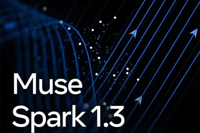
3 家媒體報導modeleraastra
GPT-6 Astra Is Here—and OpenAI Thinks It May Kick Off the AGI Era
OpenAI leaders think the company’s next generation model, which excels at computer use and coding, may mark a major milestone in AI development.
3 家媒體報導flash3.8gemini
Gemini 3.8 Flash 上線，自主工程任務能力衝破 90%
Google 推出 Gemini 3.8 Flash，Terminal-Bench 跑分衝破 90 分，這是 Gemini 6 週內第 3 個 Flash 新版。
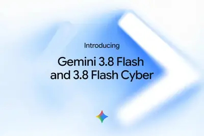
2 家媒體報導daybreakfrontlineessential
OpenAI 宣布将向全球投入 10 亿美元扩大 AI 网络安全能力，优先覆盖供水、电力等关键服务
IT之家 9 月 4 日消息，OpenAI 今日宣布推出“Daybreak for Frontline Defenders”计划，承诺投入 10 亿美元 （现汇率约合 67.36 亿元人民币） ，为资源有限的网络安全防御团队提供 Daybreak 访问权限、培训、技术支持及合作服务，帮助其利用前沿 AI 保护供水、电力、地方政府和金融等关键服务。 IT之家注：Daybreak Access 是 OpenAI 的网络安全可信访问计划。Daybreak Blue 和 Daybreak Red 是两个访问级别。 OpenAI 表示，这项全球计划首先在美国展开，
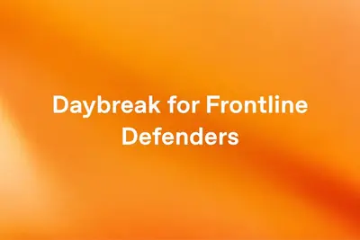
2 家媒體報導localnvidiafree
Nvidia launches free tool that links idle computers into a personal AI data center
Nvidia is announcing its new Personal AI Router (PAIR), a free tool that syncs up your home computers for tackling local AI inference tasks with tools like Ollama and LM Studio. Let's get the obvious thing out of the way, despite what its name might imply: PAIR is not a hardware
2 家媒體報導weatheraccurateglobal
Introducing WeatherNext 3, our most advanced and accurate global weather AI model
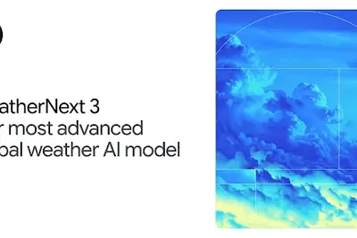
2 家媒體報導
美國司法部聲援 OpenAI！主張訓練 LLM 屬合理使用，稱紐時勝訴恐威脅國安
美國司法部首度在 AI 著作權訴訟中表態，向法院遞交利益陳述書，主張以受著作權保護的文字訓練 LLM 構成合理使用，並稱相反的法律規則將威脅國家安全、讓外國對手取得競爭優勢。

agentowaspexcessive
企業AI代理權限控管風險浮現，逾6成曾遇AI代理越界操作
開放全球應用程式安全計畫（OWASP）在2026年LLM十大安全風險中，將過度代理授權（Excessive Agency）列為第3大風險。
- iThome 企業AI代理權限控管風險浮現，逾6成曾遇AI代理越界操作
cpugpurtx
英伟达 RTX Spark N1X 超级芯片在移动端提供 5120 核 GPU + 18 核 CPU 低配
IT之家 9 月 4 日消息，根据 NVIDIA（英伟达）官网更新，其面向 Windows on Arm PC 的 RTX Spark N1X 超级芯片处理器在笔记本电脑端提供 2 档配置，而 桌面主机上则仅有“满血”高配 。 可以看到，RTX Spark N1X 面向移动端提供了 5120 核 GPU + 18 核 CPU 的低配， GPU 规模较 6144 核高配缩减 1/6、CPU 则较 20 核高配减少 2 个核心 （IT之家注：NVIDIA 尚未公布 CPU 具体配置）。 值得注意的是， 早期电商泄露就提到了两个配置的 N1X ，不过那时是以
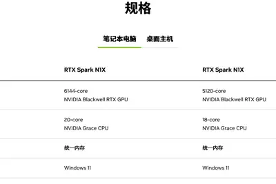
ms-s1495max-p495
铭凡确认 AI 迷你工作站 MS-S1 MAX-P495 九月开售
IT之家 9 月 4 日消息，MINISFORUM（铭凡）今日确认，其基于 AMD 锐龙 AI Max+ PRO 495 处理器的新款 AI 迷你工作站 MS-S1 MAX-P495 即将在本月内开售 。 MS-S1 MAX-P495 配备 192GB LPDDR5X-8533 统一内存，支持将至多 160GB 分配为显存。其在实际本地 AI 部署中的表现如下： 以 Q4 量化运行 DeepSeek V4 Flash 284B，推理输出速率 15 Token/s； 以 Q8 量化运行 122B 模型，推理输出速率 27 Token/s； 支持 Q8 高精
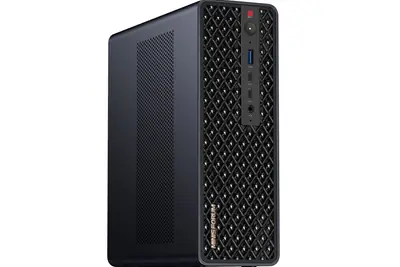
datacenterdgxvs.
淺談 DGX Spark vs. RTX Spark：不同 OS 就等於不同產品嗎？
NVIDIA 近年積極把 AI 算力從資料中心往桌面與個人裝置推進，而 DGX Spark 與 RTX Spa […]
- 科技新報 TechNews 淺談 DGX Spark vs. RTX Spark：不同 OS 就等於不同產品嗎？
grokcursorclaude
IT早报 0904：ChatGPT、Claude 和 Grok 集体宕机近 4 小时；微信回应“好友超 1 万可查看单删好友”；时隔 6 年华为国行 5G 回归；微短剧统一标识苔花标发布...
“IT早报”时间，大家好，现在是 2026 年 9 月 4 日星期五，今天的重要科技资讯有： 1. （更新：已恢复正常）ChatGPT、Grok、Claude、Cursor 集体突发故障 Downdetector 报告显示，美国用户使用 OpenAI、Claude、Grok、Cursor 服务时均已出现问题。>> 查看详情 2. 微信公关总监回应“好友超 1 万可查看单删好友”：给忙到加不进好友的人，一个整理关系的出口 针对网友热议的“好友超 1 万可查看单删好友”功能，微信公关总监回应，这个功能并不是为“查谁删了我”而设计的，而只是给那些真的忙到加不进
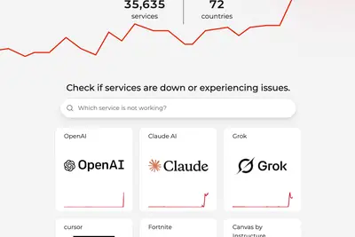
5.3glm-5.3-flashdeepseek
智谱 GLM-5.3-Flash 夜间免费用：9 月 3 日至 20 日、每天 23 时至次日 9 时额度全免
IT之家 9 月 4 日消息，智谱 AI 昨日宣布，旗下 GLM Coding Plan 正式推出“Flash × ZCode”夜间畅用活动。 即日起至 9 月 20 日，每晚 23:00 至次日 9:00，所有付费套餐用户无需手动开启，系统将自动生效优惠。活动期间，GLM Coding Plan 套餐中的 GLM-5.3-Flash 模型额度消耗规则如下： 通过智谱官方编程工具 ZCode 使用时，额度消耗为 0，实现完全免费畅用。 通过套餐支持的其他 Agent 使用时，可用额度翻倍（×2）。 IT之家提醒：本次活动仅针对 GLM-5.3-Flash
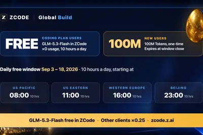
pairapplemac
英伟达开源发布 PAIR：本地跑 AI 新方案，调度 Mac / RTX PC 跨设备推理
IT之家 9 月 4 日消息，科技媒体 AppleInsider 昨日（9 月 3 日）发布博文，报道称英伟达以开源测试版状态，推出 Personal AI Router（PAIR）软件， 用于在局域网内为本地 AI 请求选择可用计算机，类似把任务分派给空闲工位的调度员。 在兼容设备上，该软件可以在 M4 以及更高的 Mac 设备、英伟达 RTX PC 和 DGX Spark 设备上运行，为 Ollama、LM Studio 等本地 AI 工具提供统一请求入口。用户可在家庭或办公局域网内，将多个独立 AI 请求调度至空闲设备处理。IT之家附上相关截图如下
企業導入 AI 的三大隱形地雷，破解基礎架構瓶頸、影子 AI 與僵化治理
企業在加速將人工智慧（AI）導入日常營運的同時，全新的風險也隨之浮現。近期多篇科技分析指出，企業 AI 面臨的 […]

- 科技新報 TechNews 企業導入 AI 的三大隱形地雷，破解基礎架構瓶頸、影子 AI 與僵化治理
samaltman
與戴鏡頭者對話「非常不舒服」，奧特曼公開表示不喜歡智慧眼鏡
OpenAI 執行長山姆·奧特曼（Sam Altman）近日公開表示不喜歡智慧眼鏡，他形容與戴著鏡頭及燈光裝置 […]

- 科技新報 TechNews 與戴鏡頭者對話「非常不舒服」，奧特曼公開表示不喜歡智慧眼鏡
robotchatgptcognitive
研究显示：用户过度依赖 ChatGPT 等 AI 产品可能导致独立思考能力下降
IT之家 9 月 4 日消息，外媒 notebookcheck 援引《应用认知心理学》（Applied Cognitive Psychology）期刊一项小型研究，认为用户过度依赖 ChatGPT 等 AI 产品可能会导致用户独立思考能力下降、自我怀疑增加以及社交孤立加剧。 IT之家参考报道获悉，来自法国巴黎 ISC 商学院的研究人员 Zeineb Farhat 采访了 45 名年龄在 18 至 25 岁、每天使用 ChatGPT 的人士，了解这款工具对他们学习习惯、工作以及情绪生活产生的影响。 研究结果显示，一些受访者在习惯通过 ChatGPT 即时获
快速消費品巨頭如何迎戰供應鏈波動？金百利克拉克的數位分身與資料湖策略
旗下擁有舒潔（Kleenex）、靠得住（Kotex）與好奇（Huggies）等知名品牌的消費品巨頭金百利克拉克（Kimberly-Clark），近年積極將 AI 深度導入物流排程與工廠營運中。透過數據與自動化技術，該公司不僅大幅削減營運成本，更在競爭激烈的快消品市場中，持續鞏固營運效率與供應鏈韌性。 突破傳統物流瓶頸，導入 AI 數位分身降低 60% 貨運波動 過去金百利克拉克在運輸調度上經常面臨貨流不均的問題，例如部分日子出貨量集中，造成車輛與運輸容量過載，其他日子卻可能出現需求驟降與產能閒置。這類波動與訂單、庫存、運輸容量及客戶交貨要求彼此牽動，單靠
- TechOrange 科技報橘 快速消費品巨頭如何迎戰供應鏈波動？金百利克拉克的數位分身與資料湖策略
astragpt-6safety
OpenAI GPT-6 Astra 发布：首次达到“关键”级网络安全能力门槛，布罗克曼认为 AGI 时代已经到来
IT之家 9 月 4 日消息，当地时间 9 月 3 日，OpenAI 宣布推出新一代 GPT-6 Astra 模型，这是该公司迄今为止最强大、部署最广泛的大语言模型。 据介绍，Astra 是 OpenAI 旗下首个达到其“准备框架”（Preparedness Framework）中“关键”（Critical）网络安全能力门槛的模型。格雷格 · 布罗克曼（Greg Brockman）声称，随着 Astra 的发布，世界已经进入了通用人工智能的新时代。 据 OpenAI 介绍，Astra 在网络安全能力上实现了显著跃升。在提供适当工具和访问权限的情况下，该模
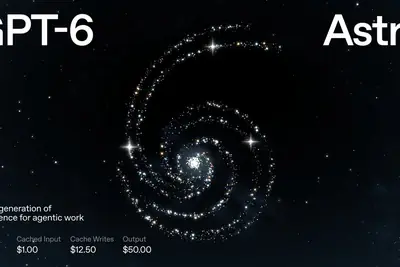
predictionmarketpeople
Prediction Market Betting Is Getting People Banned and Arrested
This week on Uncanny Valley, we dig into the latest prediction market buzz, Flock’s AI-powered police search tool, and how tech bros don’t know how to talk about “rouge” AI agents
hbmmicrosoftsemicon
【科技早餐】台積電近 20 廠仍追不上 AI，OpenAI 開發 AI 自動關閉機制
【科技早餐】今天精選 8 則國內外重要科技新聞。 ＊SEMICON Taiwan 2026：台積電近 20 廠仍追不上 AI，Microsoft：擴產還不夠 台灣半導體產業協會理事長暨台積電副共同營運長侯永清，在 SEMICON Taiwan 2026 爐邊對談表示，AI 需求成長速度是過去 30 年未見。台積電去年底估算 2026 年為滿足客戶需求所需採購的設備，僅過一季就提高至原估值的 1.5 倍，7 月再增至 1.9 倍。目前台灣同步興建 13 座晶圓廠，海外另有 5 至 6 座，全球合計接近 20 座；相較過去同一時間約興建 4 至 5 座，擴產
- TechOrange 科技報橘 【科技早餐】台積電近 20 廠仍追不上 AI，OpenAI 開發 AI 自動關閉機制
httpscommentsurl
OpenAI's GPT-6 Astra on ARC-AGI-3
Article URL: https://arcprize.org/blog/astra Comments URL: https://news.ycombinator.com/item?id=49555691 Points: 151 # Comments: 81
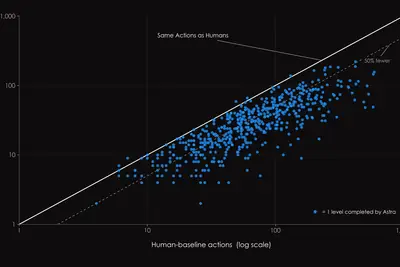
- Hacker News (100+) OpenAI's GPT-6 Astra on ARC-AGI-3
- Hacker News (100+) Qwen 3.8 27B available on Cerebras at 1500 tokens/s
- Hacker News (100+) Ask HN: Why were OpenAI, Claude, and Grok simultaneously down?
accelreportedlytalks
Accel reportedly in talks to lead $1B round for Thinking Machines at $40B valuation
The high-profile startup's annual revenue run rate stands at over $100 million.
abliteration.aimakingguardrails
Abliteration.ai is making a business out of removing AI guardrails
Abliteration.AI is making powerful AI models without guardrails easier to access, arguing that giving defenders the same tools as bad actors could ultimately improve cybersecurity.
elonmuskbillion-dollar
OpenAI Cut Off a Billion-Dollar Customer to Avoid Elon Musk
OpenAI recently estimated its Cursor partnership would make more than $1 billion in revenue a year, WIRED has learned. It still walked away after Elon Musk’s SpaceX acquired the AI coding startup.
olliefocusprivacy
Ollie is betting its focus on privacy can help it win the AI assistant race
The family-focused AI assistant wants access to the details of your everyday life, but says it won’t use that data to train AI models or share it with others.
gmaildocslive
Google now lets you chat with Gmail, Docs, and Keep
Google is rolling out AI-powered voice assistant modes for Gmail, Docs, and Keep that allow you to manage the apps by talking to them. The real time conversational capabilities are called Gmail Live, Docs Live, and Keep Live, and like the Gemini Live experience for Google's chatb
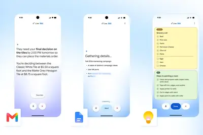
- The Verge AI Google now lets you chat with Gmail, Docs, and Keep
weathernextdeepmind
谷歌 DeepMind 发布 WeatherNext 3：分辨率最高 5 公里，号称全球最先进、精准 AI 天气预报模型
IT之家 9 月 3 日消息，谷歌 DeepMind 和 Google Research 今天宣布推出 WeatherNext 3 ，号称是目前最先进、最准确的全球气象模型。该模型可直接从实时观测中学习，能够为影响人类的天气事件提供更及时、更本地化的预测。 该模型可以原始卫星数据为基础，每小时生成一次高分辨率预报，为全球谷歌产品提供可靠的天气预报。 根据介绍，天气预报的实用性往往取决于细节，以及时间和空间的分辨率。WeatherNext 3 可生成多种空间分辨率的每小时预报，从广阔的全球风型到局部地形都能保持物理一致性。 借助 WeatherNext 3
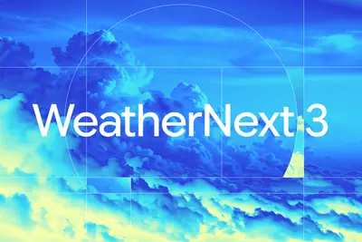
em-pcompute
领克 10 EM-P 将继续销售现款车型，官方确认 2026 年没有车型更新计划
IT之家 9 月 3 日消息，针对“网传领克 10 EM-P 今年会有新年款”的问题，领克官方今日发文回应。 公告称，领克 10 EM-P 自上市以来受广大用户的喜爱，凭借原创外观设计与舒享豪华空间、全系标配 eAWD 智电四驱系统、LYNK FlymeAuto2 智能座舱系统，吸引了大量高价值用户群体， 成为 2026 年上半年中大型高端混动轿车销量冠军 。上市以来领克 10 EM-P 售价、权益保持长期稳定，大家可以放心选购。 官方确认，领克 10 EM-P 将继续销售现款车型， 2026 年没有车型更新计划 。今年四季度，领克 10 EM-P 将通
excuseforgetumbrella
Google’s latest AI weather model gives you no excuse to forget your umbrella
WeatherNext 3 is the latest wave of a sea change in meteorology brought out by deep learning techniques. Google says it will start feeding into weather information users see in search, Google Maps, and Gemini.
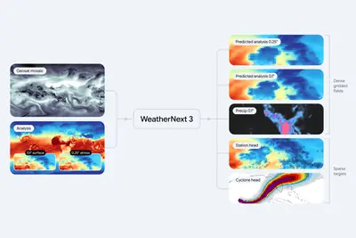
humainhumain-m3minimax
沙特 HUMAIN 公布前沿阿语模型 humain-m3，由 MiniMax 受托开发
IT之家 9 月 3 日消息，沙特阿拉伯主权财富基金 PIF 旗下人工智能企业 HUMAIN 当地时间今日公布了前沿阿拉伯语模型 humain-m3。 该模型由 MiniMax 受托开发 。 humain-m3 基于 MiniMax 自家 MiniMax-M3 构建，并进行了 T 级阿拉伯语原生文本 Token（词元）规模的预训练。 其在 7 个公开的阿拉伯语基准测试中取得了参测前沿模型中的最高平均分 。 humain-m3 率先在 HUMAIN Node 平台以研究和评估预览版本提供。HUMAIN 后续将发布开放权重版本。 HUMAIN 首席执行官 T
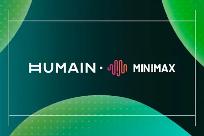
1993gameporting
Porting my 1993 Amiga game to Godot, with an LLM reading the 68000 assembly
These are my notes from porting my Amiga game, which I originally built in Baghdad in 1993 in MC68000 assembly, to Godot, using Claude Fable 5 during last July holiday. It took an evening! Getting the feel right and shipping it took a few more weekends and evenings. I spent the l
- Hacker News (100+) Porting my 1993 Amiga game to Godot, with an LLM reading the 68000 assembly
300
OpenAI 将召集约 300 名安全领域负责人，筹备网络安全相关公告
IT之家 9 月 3 日消息，据美媒 Axios 今天（3 日）晚间援引 OpenAI 一名发言人消息称，OpenAI 总裁格雷格 · 布罗克曼预计即将宣布扩大关键基础设施，以及公共部门机构对 OpenAI 工具的使用权限。 此前，OpenAI 意外入侵 Hugging Face，加上美国供水系统接连遭遇疑似借助 AI 实施的网络攻击，引发外界对公用事业设施抵御未来 AI 赋能网络攻击能力的严重担忧。 OpenAI 发言人透露，当地时间周四，布罗克曼将在 OpenAI 总部举行的一场网络安全峰会上公布该计划，预计将有约 300 名来自《财富》100 强企
neommeefficientmultimodal-native
NeoMME: an efficient Multimodal-native and Multilingual Encoder
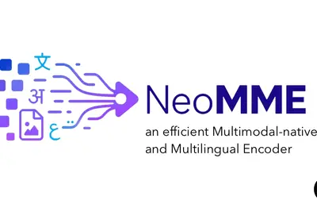
dlssnbak27
‘NBA 2K27’ With NVIDIA DLSS 5 Leads 28 New Games Coming to GeForce NOW
September is here with 28 more games streaming on GeForce NOW this month, led by a slam dunk: NBA 2K27 with the NVIDIA DLSS 5 3D-Guided Neural Rendering feature. Through NVIDIA’s close collaboration with Visual Concepts and 2K, DLSS 5 brings a new level of lifelike lighting and m
pcssuperchipfirst
Nvidia RTX Spark ‘Superchip’: The First AI PCs Are Here
At IFA 2026, Nvidia and its partners showed off the first RTX Spark-powered laptops and mini PCs, designed to run AI models right on your computer.
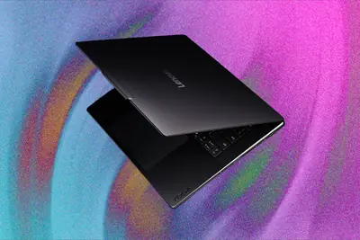
legoradocumentsminutes
Legora reviewed 41 documents in minutes with GPT-6 Astra
Legora used GPT-6 Astra to review 41 documents in minutes, find all four planted errors, and improve performance by nearly 40% in this financial-review workflow.
playcomanualfixes
Playco cut manual fixes 50% prototyping games with GPT-6 Astra
Using GPT-6 Astra, Playco built three themed game prototypes from one grey box foundation and reported 50% fewer manual fixes than with the previous model.